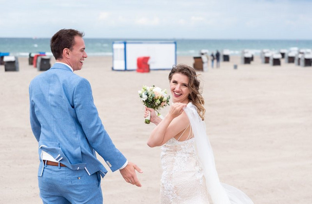

Trauringe auswählen
Material, Alltag und Passform zusammen denken.
Zum Beitrag ↗LESEN. ENTDECKEN. WEITERPLANEN.
Ideen für eure Hochzeit. Und die praktischen Fragen, die dahinterstehen.

Planung
Welche Fragen euch bei der Besichtigung wirklich weiterhelfen.
Weiterlesen ↗Stil & Ideen
Brautmode, Blumen und Musik: Ideen für 2026 und 2027.
Weiterlesen ↗Aus dem Magazin
Das vorhandene Interview mit Linda und Marko von HCT.
Weiterlesen ↗An der Küste
Damit eine Wetteränderung nicht den ganzen Tag verändert.
Weiterlesen ↗Material, Alltag und Passform zusammen denken.
Zum Beitrag ↗Welche Bilder sollen von eurem Tag bleiben?
Zum Beitrag ↗Das vorhandene FAQ zur Planung und zu Dienstleistern.
Zum FAQ ↗